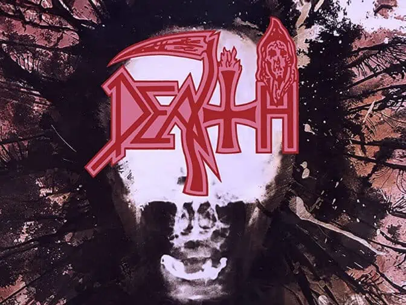

Deathin Individual Thought Patterns tänään 30 vuotta - ”Jos sosiaalinen media olisi ollut olemassa, Chuck olisi saanut raivoisia kommentteja”
Deathin viides albumi ilmestyi 22.6.1993.
22.06.2023
Death-yhtyeen viides pitkäsoitto Individual Thought Patterns julkaistiin 22. kesäkuuta 1993 eli tasan 30 vuotta sitten. Tämä oli ensimmäinen Death-levy, jolla soitti rumpuvirtuoosi Gene Hoglan ja vastavuoroisesti viimeinen basisti Steve Di Giorgion kanssa. Bändiliideri ja laulaja-kitaristi Chuck Schuldinerin rinnalla toisena kitaristina levyllä soitti King Diamondin luottokitaristina tunnettu Andy LaRocque. ”Luulin varautuneeni kaikkeen Humanin (1991) jälkeen, mutta Individual Thought Patterns yllätti minut jo ennen kuin levyä oli edes sovitettu loppuun. Se oli ihan erilaista materiaalia Humaniin verrattuna. Alkuperäisellä riffinauhalla Humanin ja Individual Thought Patternsin erot olivat vielä suurempia kuin valmiilla levyllä. Otin kitaran käteen ja yritin tapailla biisejä. Huomasin, että valtaosa riffeistä liikkui jossain A-kielen seitsemännen nauhan ympärillä. Tiedäthän, korkeaa E:tä, F:ää ja G:tä. Se oli ihan jazzia!” kitarankin hallitseva Hoglan kertoi Aki Nuopposen toimittamassa, alun perin Infernon numerossa 10/2018 julkaistussa massiivisessa Death-artikkelissa. ”Olin ihan pyörällä päästäni lentäessäni Floridaan. Kun Chuck oli poiminut minut kentältä, painuimme illallisen jälkeen treenikselle. Istuimme siellä kitarat sylissä, ihmettelin ääneen riffien korkeutta ja kysyin Chuckilta, onko hän kokeillut soittaa niitä matalammalta ja jyräävämmältä taajuudelta. Chuck lähti soittamaan kappaleita mukanani ja innostui ajatuksesta, mikä hyvin pitkälti sementoi koko albumin lopullisen ’aksentin’. Ilman noita sessiota levystä olisi saattanut tulla aivan erilainen.” ”Chuck oli tosi avoin minun ja Genen ideoiden suhteen, ja levy eli todella paljon niiden muutamien viikkojen aikana, kun treenasimme yhdessä. Monesti luulin menneeni liian överiin laitaan bassosovitusten kanssa, mutta Chuck tuli kuuntelemaan niitä ja rohkaisi hymyillen, että tämä on hyvä, mutta vedä vielä enemmän läskiksi”, Di Giorgio toteaa ja sanoo Schuldinerinkin muistelleen Individual Thought Patternsin aikoja myöhemmin lämmöllä. ”Vuosia myöhemmin Chuck kertoi minulle, että vaikka piti paljon Symbolicistä (1995) ja The Sound of Perseverancesta (1998), hän jäi aina kaipaamaan sitä kemiaa ja rentoutta, joka vallitsi juuri Individualin sessioissa. Chuckista nuo ajat olivat hengeltään täydellisiä ja kiertäminenkin meni ihanteellisesti, ilman mitään kitkaa. Olihan se uskomaton kiertue, ei käy kieltäminen, enkä ihmettele yhtään sitäkään, että Chuck oli bändin lopetettuakin sitä mieltä, että Individual Thought Patterns oli Deathin paras albumi.” Death metal -yleisölle levy ja monet sillä tehdyt ratkaisut eivät olleet kuitenkaan mikään läpihuutojuttu. ”Vanhan liiton death metal -äijät raapivat hetken päitään ja palasivat sitten uusien Morbid Angel-, Deicide-, Obituary– tai Cannibal Corpse -levyjen pariin, koska Death ei enää edustanut tarpeeksi rajua ääripäätä. Mutta kas kummaa, ajan kanssa monet kyrmyniskaisimmatkin kuoloörmyt löysivät nämä levyt, kun heidänkin musiikkimakunsa laajeni yhä avarammaksi”, Hoglan toteaa ”Jos sosiaalinen media olisi ollut olemassa, Chuck olisi varmasti saanut raivoisia kommentteja levyn julkaisun aikoihin. Minäkin sain puheluita: ’Mitä helvettiä Deathille on tapahtunut? Mitä olet tehnyt Deathille?’ Kaikki eivät yksinkertaisesti olleet valmiita Humaniin ja vielä vähemmän Individual Thought Patternsiin.” Lue koko Death-teemajuttu tästä. Individual Thought Patternsin voit laittaa soimaan puolestaan tuosta alta.